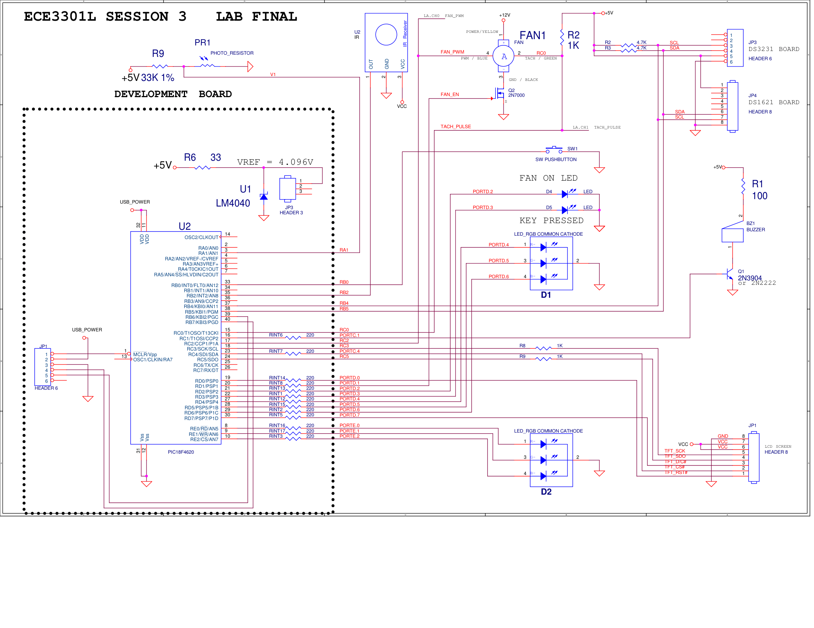

PIC18F ENVIRONMENTAL & PWM FAN CONTROL SYSTEM
PIC18F4620 MCU | C Firmware (MPLAB X) | I2C & SPI | PWM & ADC
Hardware Interrupts | IR Decoding | ST7735 TFT Display
QUICK NAVIGATION
Hardware Photos
HARDWARE SETUP (VIEW 1)

TFT DISPLAY (VIEW 2)

1. Overview & Objectives
This embedded systems capstone project integrates multi-protocol peripheral interfacing, hardware interrupts, and real-time PWM actuation on a PIC18F4620 microcontroller programmed in C. The system functions as an automated environmental and timing controller with a live graphical user interface rendered on an ST7735 TFT LCD via SPI and real-time UART serial telemetry output to TeraTerm.
Key System Capabilities & Objectives:
- Dual-Trigger System Activation: Engineered the system power state to toggle cleanly between standby ("SYSTEM OFF") and active monitoring via either an external hardware push-button interrupt (
INT0) or an analog photoresistor light sensor threshold (>3.0V via internal ADC). - I2C Environmental & Real-Time Clock Interfacing: Configured an I2C bus to poll a DS3231 Real-Time Clock (RTC) for time/date tracking and a DS1621 digital thermometer to compute ambient temperatures in both Celsius and Fahrenheit every second.
- Closed-Loop & Manual PWM Fan Actuation: Designed dual-mode fan control. In Manual Mode, duty cycle is adjusted directly via remote input. In Automatic Mode, the firmware calculates the thermal differential between ambient temperature and a user-defined target threshold (50°F–110°F), dynamically scaling the PWM duty cycle (
diff_temp * 4) to regulate cooling speed. - Tachometer RPM Feedback & RGB Status Encoding: Utilized hardware timer/counter registers (
TMR3L) to measure real-time fan rotational speed (RPM) and mapped both PWM duty cycle and RPM ranges to 3-bit color codes across dual RGB LEDs (D1 and D2). - NEC Infrared (IR) Remote Decoding & Interactive GUI: Implemented interrupt-driven NEC IR decoding to navigate multi-screen TFT menus (Main Dashboard, Time/Date Setup, Fan Temp Setup), configure programmable countdown timers (TM1, TM2, TM3), and trigger piezoelectric audio confirmation tones.
2. Wiring Diagram / Schematics
Complete hardware schematic detailing the PIC18F4620 pinout, I2C/SPI bus lines, MOSFET fan driver circuitry, ADC light sensor divider, and RGB LED port mappings.

3. Firmware & Modular Code
The firmware is architected modularly in MPLAB X IDE across dedicated hardware abstraction headers and C source files to separate I2C communication, SPI display rendering, interrupt service routines, and fan control logic.
Modular Firmware Directory

Main System Firmware (Lab_13_Main.c)
#include <stdio.h>
#include <stdlib.h>
#include <xc.h>
#include <math.h>
#include <p18f4620.h>
#include <usart.h>
#include <string.h>
#include "I2C.h"
#include "I2C_Support.h"
#include "Interrupt.h"
#include "Fan_Support.h"
#include "Main.h"
#include "ST7735_TFT.h"
#include "utils.h"
#include "Main_Screen.h"
#include "Setup_Time.h"
#include "Setup_Fan_Temp.h"
#pragma config OSC = INTIO67
#pragma config BOREN =OFF
#pragma config WDT=OFF
#pragma config LVP=OFF
void Set_D1_RGB(char);
void Set_D2_RGB(int);
void test_alarm();
char second = 0x00;
char minute = 0x00;
char hour = 0x00;
char dow = 0x00;
char day = 0x00;
char month = 0x00;
char year = 0x00;
char found;
char tempSecond = 0xff;
signed char tempC, tempF;
char setup_second, setup_minute, setup_hour, setup_day, setup_month, setup_year;
unsigned char fan_set_temp = 16;
unsigned char Nec_state = 0;
float volt;
char INT0_flag, INT1_flag, INT2_flag;
char light_flag;
short Nec_ok = 0;
char Nec_Button;
char FAN;
char duty_cycle;
int rps;
int rpm;
char FANMODE = 0;
char FAN_TIMER_MODE = 0;
char FAN_TIMER_TIME = 0;
char SYSTEM_ON = 0;
char buffer[35] = " \0";
char *nbr;
char *txt;
char tempC_Txt[] = "+25";
char tempF_Txt[] = "+077";
char time_Txt[] = "00:00:00";
char date_Txt[] = "00/00/00";
char Fan_Timer_Mode_Txt[] = "OFF";
char Fan_Timer_Txt[] = "000";
char Fan_Set_Temp_Txt[] = "77F";
char Fan_Mode_Txt[] = "MANU"; // text storage for Fan Mode
char Fan_SW_Txt[] = "OFF"; // text storage for Fan On/Off
char DC_Txt[] = "000"; // text storage for Duty Cycle value
char Volt_Txt[] = "0.00V";
char RTC_ALARM_Txt[]= "0"; //
char RPM_Txt[] = "0000"; // text storage for RPM
char setup_time[] = "00:00:00";
char setup_date[] = "01/01/00";
char setup_fan_set_text[] = "077F";
void Do_Init() // Initialize the ports
{
Init_UART(); // Initialize the uart
Init_ADC();
OSCCON=0x70; // Set oscillator to 8 MHz
ADCON1= 0x0E;
TRISA = 0x03;
TRISB = 0x07;
TRISC = 0x01;
TRISD = 0x00;
TRISE = 0x00;
PORTE = 0x00;
FAN = 0;
RBPU =0;
I2C_Init(100000);
DS1621_Init();
Init_Interrupt();
duty_cycle = 50;
Turn_Off_Fan();
fan_set_temp = 77;
}
void main()
{
Do_Init(); // Initialization
Initialize_Screen();
TMR3L = 0x00;
T3CON = 0x03;
Deactivate_Buzzer();
tempSecond = 0xff;
while (1)
{
DS3231_Read_Time();
if(tempSecond != second)
{
tempSecond = second;
rpm = get_RPM();
volt = Read_Volt(1);
if (volt > 3.000) light_flag = 1;
tempC = DS1621_Read_Temp();
tempF = (tempC * 9 / 5) + 32;
Set_D1_RGB(duty_cycle);
Set_D2_RGB(rpm);
printf ("%02x:%02x:%02x %02x/%02x/%02x",hour,minute,second,month,day,year);
printf (" Temp = %d C = %d F ", tempC, tempF);
printf ("Light Sensor = %f V", volt);
printf (" RPM = %d dc = %d ls = %d\r\n", rpm, duty_cycle, light_flag);
Monitor_Fan();
Update_Screen();
}
// Task #1: Check remote button input when system is active
if (check_for_button_input()==1 && SYSTEM_ON == 1)
{
printf("Key Location = %d \r\n\n", found);
Nec_ok = 0;
switch(found)
{
case Ch_Minus:
Do_Beep_Good();
Do_Setup_Time();
break;
case Channel:
Do_Beep_Good();
Setup_Fan_Temp();
break;
case Prev:
//Do_Beep_Good();
Do_Change_Fan_Timer_Mode_Minus();
break;
case Next:
//Do_Beep_Good();
Do_Change_Fan_Timer_Mode_Plus();
break;
case Play_Pause:
Do_Beep_Good();
Toggle_Fan();
break;
case Minus:
Do_Beep_Good();
Decrease_Duty_Cycle();
break;
case Plus:
Do_Beep_Good();
Increase_Duty_Cycle();
break;
case EQ:
Do_Beep_Good();
if (FANMODE == 1)
FANMODE = 0;
else
FANMODE = 1;
break;
default:
Do_Beep_Bad();
}
}
// Task #2: Handle hardware interrupt (INT0) or light sensor system toggle
if (INT0_flag == 1 || light_flag == 1)
{
INT0_flag = 0;
light_flag = 0;
if (SYSTEM_ON == 1)
{
printf ("The system will now turn off. \r\n\n");
SYSTEM_ON = 0;
Turn_Off_Fan();
FAN_TIMER_MODE = 0;
FAN_TIMER_TIME = 0;
printf ("The system is now OFF. \r\n\n");
Initialize_Screen();
}
else if (SYSTEM_ON == 0)
{
printf ("The system will now turn on. \r\n\n");
SYSTEM_ON = 1;
Initialize_Screen();
}
}
}
}
void Set_D1_RGB(char duty_cycle)
{
// RGB D1: Duty Cycle Indicator
int range = duty_cycle/10;
if (range > 7)
range = 7;
PORTD = (PORTD & 0x8F) | (range<<4);
}
void Set_D2_RGB(int rpm)
{
// RGB D2: Fan RPM Indicator
int range = (rpm/500)+1;
if (range > 7)
range = 7;
if (rpm == 0)
range = 0;
PORTE = range;
}4. Video Demonstration
Live hardware demonstration showcasing system initialization, IR remote menu navigation, closed-loop temperature fan control, and real-time TFT updates.
System Operation & PWM Control Demo
5. Documentation
Review the complete final project specifications, register configurations, and hardware design guidelines.